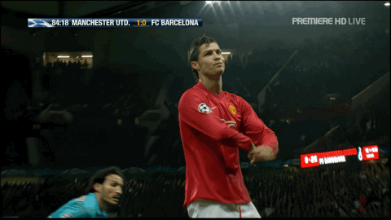
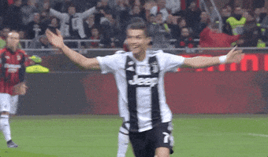
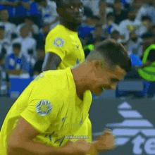
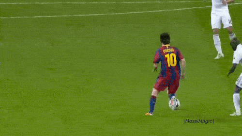
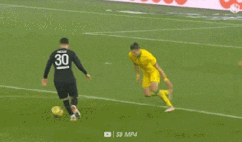
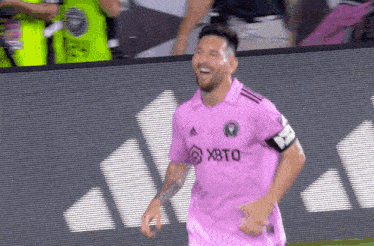

مقارنة شاملة: كريستيانو رونالدو 🆚 ليونيل ميسي
اضغط على الكره للتحويل الى الدارك مود
كريستيانو رونالدو
| البند | القيمة |
|---|
| الأهداف | 890 |
| التمريرات الحاسمة | 250 |
| عدد البطولات | 33 |
| الكرات الذهبية | 5 |
| البند | القيمة |
|---|
| العمر | 39 سنة |
| الطول | 1.87 م |
| المركز | مهاجم |
| عدد الأندية | 4 أندية |
| عدد المباريات | 1200+ |
| الأهداف | 890+ |
| التمريرات الحاسمة | 250+ |
| عدد البطولات | 33 |
| الكرات الذهبية | 5 |
| الهاتريك | 63 |
| أفضل موسم تهديفي | 2010/2011 (53 هدف) |
| كأس العالم | لا يوجد |
| دوري الأبطال | 5 مرات |
| عدد أهداف المنتخب | 128 هدف |

ليونيل ميسي
| البند | القيمة |
|---|
| الأهداف | 820 |
| التمريرات الحاسمة | 300 |
| عدد البطولات | 44 |
| الكرات الذهبية | 8 |
| البند | القيمة |
|---|
| العمر | 37 سنة |
| الطول | 1.70 م |
| المركز | صانع ألعاب / مهاجم |
| عدد الأندية | 3 أندية |
| عدد المباريات | 1050+ |
| الأهداف | 820+ |
| التمريرات الحاسمة | 350+ |
| عدد البطولات | 44 |
| الكرات الذهبية | 8 |
| الهاتريك | 57 |
| أفضل موسم تهديفي | 2011/2012 (73 هدف) |
| كأس العالم | 1 مرة |
| دوري الأبطال | 4 مرات |
| عدد أهداف المنتخب | 109 هدف |
مقارنة الإحصائيات بالرسم البياني
📸 صور اللاعبين عبر مسيرتهم
كريستيانو رونالدو

.gif)


ليونيل ميسي



👥 Face to Face – مقارنة المواسم بين ميسي ورونالدو
| الموسم |
اللاعب |
الأهداف ⚽ |
الأسيست 🎯 |
البطولات 🏆 |
تقييم الموسم 🌟 |
| 2009/2010 |
ميسي |
47 |
11 |
2 |
9.2 |
| رونالدو |
33 |
7 |
0 |
8.8 |
| 2010/2011 |
ميسي |
53 |
24 |
3 |
9.5 |
| رونالدو |
53 |
14 |
1 |
9.1 |